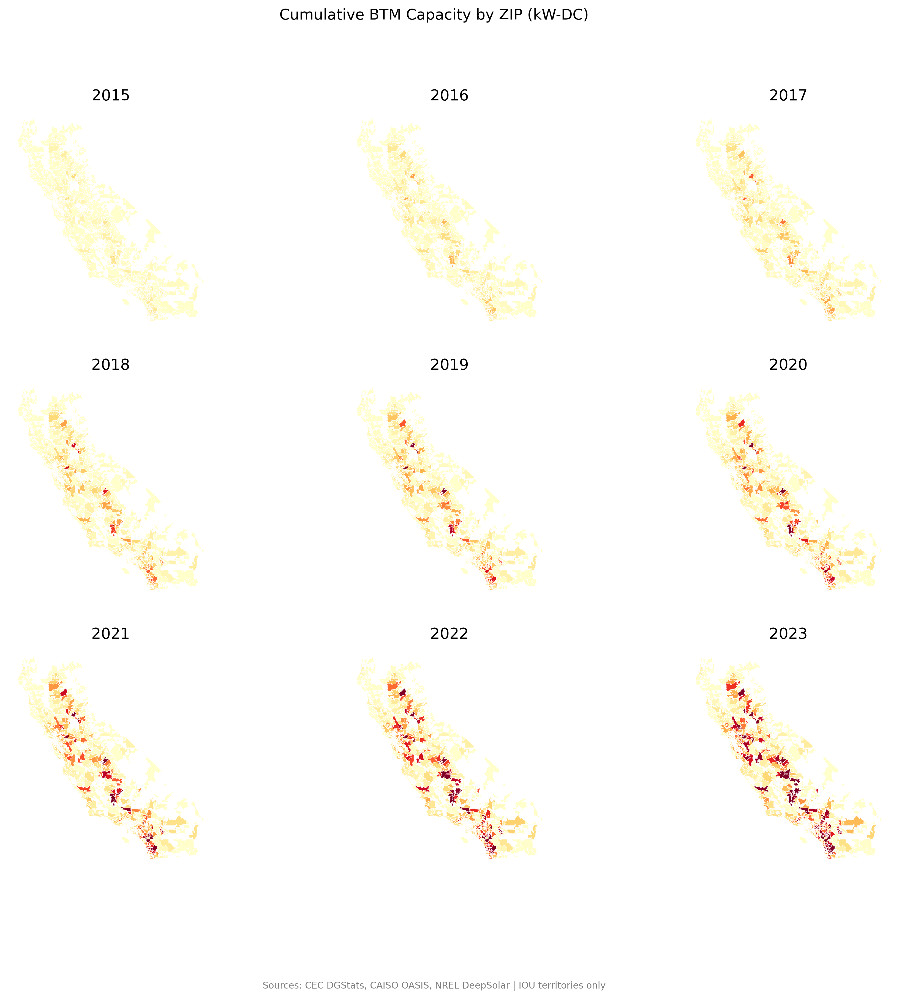
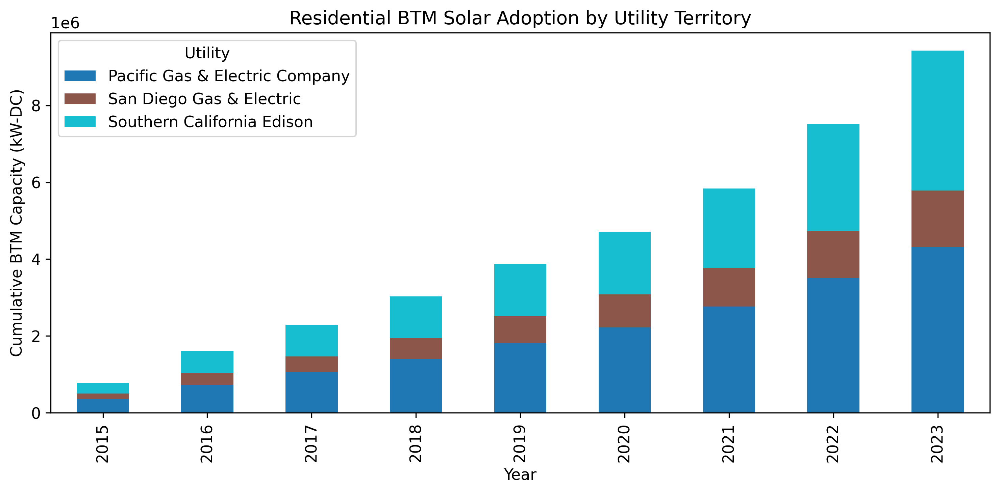

4. Where Solar Clustered: Geographic Patterns of BTM Adoption (2015–2023)#
4.1. Key Findings#
Between 2015 and 2023, behind-the-meter residential solar capacity in California’s three largest investor-owned utilities (PG&E, SCE, SDG&E) grew from approximately 0.3 GW to 9.2 GW—a 30x increase. This growth was highly concentrated geographically.
4.2. Spatial Clustering#
{kind=link}

Fig. 4.1 BTM solar adoption concentrated in high-solar-potential suburban ZIP codes, particularly in inland Southern California counties: Riverside, Kern, San Bernardino, and Orange. This pattern is consistent with prior research showing adoption is correlated with household income, home ownership rates, and solar resource quality.#
4.3. Temporal Evolution by Utility#
{kind=link}

Fig. 4.2 Southern California Edison territory led adoption throughout the period, reflecting higher residential density and solar potential. The sharp plateau in 2023 (visible as a flattening of all three utility bars) marks the policy transition from NEM 2.0 to Net Billing Tariff on April 15, 2023. Post-NBT adoption fell 70–85% as the economics of solar-only systems deteriorated (payback period extended from ~6 years to ~12 years).#
4.4. Policy Inflection#
The 2023 cliff is a sharp reminder that adoption is policy-responsive. NEM 2.0 (2016–2023) offered retail-rate credit for exported solar generation (~\(0.30/kWh). NEM 3.0/NBT (2023+) compensates at hourly avoided cost (~\)0.05–0.08/kWh), a 75% reduction. This policy change had an immediate, measurable effect on adoption rates.
4.5. Data Sources#
CEC Distributed Generation Statistics (DGStats): Project-level interconnection records, 1999–present
Sample: ~1.3M residential NEM/NBT systems in IOU territories, 2015–2023
Geographic unit: ZIP code
Temporal granularity: Annual (end-of-year capacity)